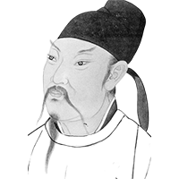
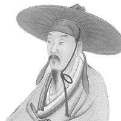
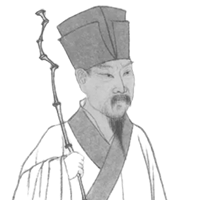

中国传统
古诗词
文化
诗文化深刻、生动地体现着中国文化的基本精神。诗文学是语言的艺术， 是民族的精神与心灵史，也是文化的主要形态之一。中国文学历经3000多年不曾中断， 是世界上历史最悠久的文学之一，是中国文化中最重要、最璀璨的部分。
了解更多 >
首页
代表
人物
经典
佳作
注册
登录
01
代表人物
统古诗词文化

李
白
作品想像奇特丰富，风格雄奇浪漫，意境独特，清新俊逸； 善于利用夸饰与譬喻等手法、自然优美的词句，表现出奔放的情感。 诗句行云流水，浑然天成。李白诗篇传诵千年，众多诗句已成经典， 清赵翼称：“李杜诗篇万口传”（例如“抽刀断水水更流，举杯消愁愁更愁”等， 更被谱入曲）。李白在诗歌的艺术成就被认为是中国浪漫主义诗歌的巅峰。 诗作在全唐诗收录于卷161至卷185。有《李太白集》传世。
杜
甫
作品想像奇特丰富，风格雄奇浪漫，意境独特，清新俊逸； 善于利用夸饰与譬喻等手法、自然优美的词句，表现出奔放的情感。 诗句行云流水，浑然天成。李白诗篇传诵千年，众多诗句已成经典， 清赵翼称：“李杜诗篇万口传”（例如“抽刀断水水更流，举杯消愁愁更愁”等， 更被谱入曲）。李白在诗歌的艺术成就被认为是中国浪漫主义诗歌的巅峰。 诗作在全唐诗收录于卷161至卷185。有《李太白集》传世。

陆
游
作品想像奇特丰富，风格雄奇浪漫，意境独特，清新俊逸； 善于利用夸饰与譬喻等手法、自然优美的词句，表现出奔放的情感。 诗句行云流水，浑然天成。李白诗篇传诵千年，众多诗句已成经典， 清赵翼称：“李杜诗篇万口传”（例如“抽刀断水水更流，举杯消愁愁更愁”等， 更被谱入曲）。李白在诗歌的艺术成就被认为是中国浪漫主义诗歌的巅峰。 诗作在全唐诗收录于卷161至卷185。有《李太白集》传世。

苏
轼
作品想像奇特丰富，风格雄奇浪漫，意境独特，清新俊逸； 善于利用夸饰与譬喻等手法、自然优美的词句，表现出奔放的情感。 诗句行云流水，浑然天成。李白诗篇传诵千年，众多诗句已成经典， 清赵翼称：“李杜诗篇万口传”（例如“抽刀断水水更流，举杯消愁愁更愁”等， 更被谱入曲）。李白在诗歌的艺术成就被认为是中国浪漫主义诗歌的巅峰。 诗作在全唐诗收录于卷161至卷185。有《李太白集》传世。
02
经典佳作
统古诗词文化